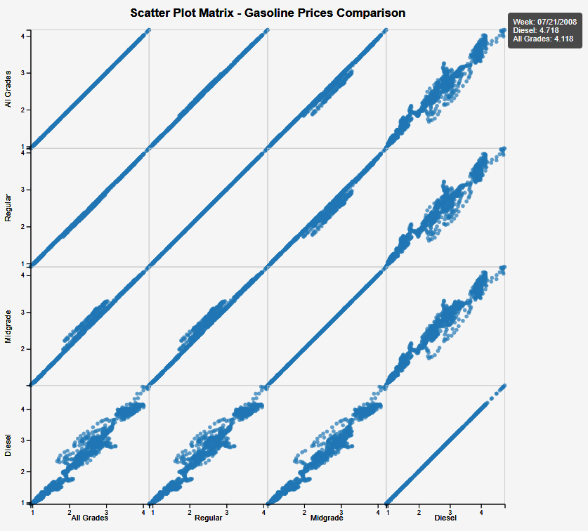
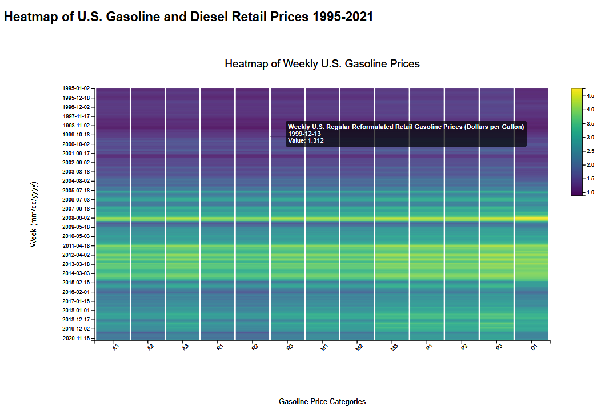

Static D3.js Visualizations
Scatter Plot Matrix of U.S. Gasoline Grade Price Correlations
This scatter plot matrix compares gasoline prices across multiple fuel categories, including Regular, Midgrade, All Grades, and Diesel. Each cell in the matrix shows a pairwise relationship between two fuel types, allowing us to visually analyze how their prices move together over time. The strong diagonal patterns indicate that prices for different fuel types follow very similar trends, reflecting high correlation. Clusters of points reveal periods where certain fuel grades are consistently higher or lower than others. This visualization helps identify pricing patterns, similarities, and variations across different gasoline categories in a clear multi-dimensional format.
Heatmap of U.S. Gasoline and Diesel Retail Prices (1995–2021)
This heatmap visualizes weekly U.S. gasoline and diesel retail prices from 1995 to 2021 across different fuel categories. Each column represents a specific gasoline or diesel grade, while each row corresponds to a week in the timeline. The color intensity indicates the price level, with darker shades representing lower prices and brighter shades indicating higher prices. This visualization clearly highlights long-term trends, such as the sharp rise in gasoline prices during the mid-2000s, fluctuations around economic events, and the overall cyclic nature of fuel pricing. The heatmap offers an intuitive way to observe patterns, price spikes, and seasonal variations over nearly three decades of fuel market data.